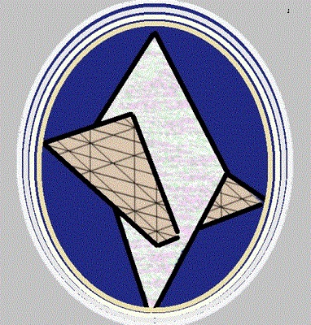

Hearts and Minds:
We’re made in God’s image, in God’s likeness; but the scripture is
clear: God is not a man, but an invisible Spirit, unfathomable. Were it
not for our spirit, we could know nothing of God’s presence. With our
natural intelligence, we might suspect or reason that God exists, but we
could never know God, because intelligence, though God’s gift for each
of us, is limited. Some are quite gifted; some, not. If we could measure
the godhead with our minds, then God is a respecter of persons, giving
advantage or disadvantage according to an individual’s intelligence
quotient.
No. God is a Spirit, a Holy Breath; and each of us is gifted with a
spirit, and our human spirits can dance with the Holy Spirit of God
because there’s an Interface, a Door, a Nexus: an invisible,
unfathomable point of contact. This place of meeting, where spirit can
meld, wed with Spirit by means of the Door, the Projected Spirit of
HaShem. Allow me to refer to God as HaShem, if you will; for the word
God has various meanings for each of us, and none of us can properly
defend what we believe.
HaShem. It means, “The Name:” Yod/He/Waw/He. The Name was given to Moshe
(Moses) on Mount Sainai. Moses didn’t see HaShem; for none of us can see
infinity. Our minds take us so far and leave us stranded in wonder or in
consternation; but our spirits can come to rest within the Holy Spirit
of HaShem; for if we seek God with our spirits, they are able to
discover the Interface, to “touch” it with the faculty of feeling, which
resides in our hearts, not in our minds.
The Name is given for a reason. Moses read and wrote in the Hebrew in
use at the time of Exodus from Egypt. Sinaitic Hebrew was not a
mysterious language. It was the common language of the Mediterranean
basin and was used in commerce: in trade, so that peoples from different
nations could understand one another. In this present time, English
serves that role. In times past, that role was served by Latin, Spanish,
French, Arabic: by whatever power dominated the world, or a significant
portion of the world, at different eras of history.
Today’s Hebrew is quite different. Aramaic Hebrew was born during the
time when the nation state of Israel, which was born with the coronation
of King Saul, fell into captivity by the world power called Babylon. No
longer masters of their days, the people of Israel found need for
secrecy, so that they could preserve their heritage without the
interference of the secular world power to which they had succumbed.
Aramaic Hebrew has two faces. Biblical Hebrew was preserved as the means
of maintaining access to the teachings that began with the ancient
fathers and peaked in the days of Moshe, who wrote in the pattern used
on Mt. Sinai, which was a precise version of that time’s common
language. You will recall that a mixed multitude accompanied Moshe into
the desert at the Exodus from Mitzraim. They had the need to
communicate, and that need was met by use of that time’s common
language, which had many names: Hebrew, Proto-Canaanite, Ancient Greek,
Ancient Arabic, Phoenician. It was the day’s common language, and each
nation state claimed it as its own. What distinguished Sinaitic Hebrew
was the precise design of the alphabet of the common language. That
design consists of fractals of the mathematics of Creation.
The hairs of our heads numbered, as is everything in creation.
Scientists can express nearly all things by numbers. Not God. Apart from
calculation, the concept of zero is as close as science can come to
defining God’s presence. They have a special name for that concept. They
call it “elsewhere.”
As incarnate beings, we are digital expressions; and every glance of our
eyes is focused not on ourselves, but “elsewhere.” Up, down, out, or
around, we scan elsewhere, absorbing what information comes to mind. Our
minds wrestle with the mathematics underlying Creation, and our
hearts—our spirits—absorb what the mind perceives and formulate new
avenues of inquiry based on the data measured by the mind at any given
moment.
Our spirits--the life sustained by the beats of our hearts—can focus on
the things of this world, and they can reach out to things unseen,
seeking “handholds,” so that the mind can be fed; and if our hearts are
enlarged, so are our minds. If we seek answers to questions that touch
upon infinite conundrums, our hearts must be enlarged. If we focus on
the finite matters of those things our intelligence perceives, then our
minds reach limitation.
There is a place in us where hearts and minds can be one. We know peace
when that place is paramount. It has a seldom-used place in scripture;
and that place is sometimes called “Immanuel,” meaning “God with us,
within us.” When we touch upon that place (our hearts and minds together
as one), we touch upon the Door, the Interface, the Nexus between our
spirits and the Holy Spirit of HaShem.
Later called “Christians,” the Essenes preached and wrote about that
place of congruence between the spirits of mankind and the Holy Spirit
of HaShem. They were soon persecuted by the scars of the world, but
their writings were preserved by pen and by word of mouth; also, by the
treasures preserved within jars in the caves of Qumran. Those writings
are snapshots of Essene understandings and will do much to restore not
only their doctrines, but also the true teachings of Sainai.
A key teaching is that the godhead is vastly superior to those things
that can be measured. The name Moshe is the word HaShem
written backwards: Creation is as a reflection of HaShem, which is why
the Essenes wrote: “Search the scriptures; for in them you think you
have eternal life, whereas these are they that testify of me”: if we
hunger for knowledge of HaShem’s presence, we must look where God can be
found. That place is seated in our hearts, not in our minds.
As they seek the faces of HaShem, our hearts are enlarged: they are born
again; and the spiritual things revealed to our hearts enlarge our
minds, also. As we question the reality of HaShem, our spirits knock
upon the Door called Immanuel, “God within us.” Answers come not as the
result of our thoughts, but through the Nexus between the Holy Spirit of
HaShem and the individual realities experienced by the spirits of
individuals. That Nexus is the Projection, the “Son,” of HaShem. Already
hidden within all things of Creation, Immanuel can be known and
understood by our spirits as they feed upon the projected Spirit of
HaShem.
Not some strange, esoteric phenomenon, God’s Spirit is with us always.
Our spirits can reach out to HaShem in the same manner they reach out to
any created thing, lifting perceptions to the mind, where they can be
recorded and collated; but understanding doesn’t fall under the
intellectual purview. Hearts that are driven by intellect become bound
by intellect; and this is the state scripture calls “thick darkness.” If
encased by the mind, the heart becomes desperately wicked; for it has
accepted limited intellect as its god, and its questioning rebounds upon
itself, like a kernel encased in its shell. The heart must be born
again: the shell must be penetrated and left behind, so that Life can
sprout anew.
I’ve written all this, not knowing why. The words proceed from my heart,
as though knocking on a door. That door is the limitations of my heart
and mind: it’s the shell of my understanding. I can offer no
indisputable argument; for I find, in myself, no answer to my own
questions but this: peace comes when my human spirit, knocking upon the
Door to Immanuel that was hidden within my heart from my first moment of
life on Earth, is allowed to open, so that my understanding can feed
upon the Spirit of HaShem by means of the Interface that tirelessly
beats within the thick darkness of my heart, that it may sprout forth,
revealing itself not only to me, but to all with whom I interact.
What then is HaShem, the Holy Name? It’s a succinct statement of
covenant between God and Creation. Every action of God (the Yod) results
in revelation (the fist He); and as each revelation is received and
cherished (the Waw), we then are blessed with enlightenment (the second
He). For any who has yet to confess the inadequacy of human limitations,
The Name promises that each action (Yod/He) will have its effect
(Waw/He) in experience; and, bumbling around between one such effect and
another, each will eventually come to the point that the human spirit
will reach inward and discover what has been hidden in every heart from
natural birth: Life itself, the Projection of HaShem, the unspeakable
gift of Life.
Seek HaShem where God can be found. Yes, all things reflect the
same spiritual reality; but God is known by HaShem’s Projection
as it becomes seated in the thrones of our hearts. When we accept that
projection as Savior, the remnants of the Tabernacle of David are
restored ad rebuilt within our hearts. The name David signifies heart
(Dalet) wed (Waw) with the Divine Heart (Dalet):
the door of the individual heart
opening unto the Door of the Heavenly Father, the Divine Projection of
the Holy Spirit of HaShem.
Harden not your hearts. The arc of time traced by the history of man is
shortened, that Earth might be preserved for the Elect; for natural man
has made a mess of Creation, and it’s the Father’s will that Earth
should be inhabited by those walking in the footsteps of the Essene
Teacher of Righteousness who walked in the name of Y’shua because his
heart was filled by Yahushua, the Projection of HaShem. The Essene
teaching wasn’t new. It was restoration of the true teachings of Moshe,
absent the inventions and traditions of mankind.
Is it not so? Hosea ben Nun (nobody and everybody’s son) was called to
serve in the tent of Moshe in the wilderness. He was given a new name:
Joshua, Y’shua. As he served with Moshe, his heart was enlarged, and his
name changed again: it wasn’t spelled differently, as at first, but it
was understood differently. Thus, Joshua/Y’shua became as one with
HaShem; and the name was pronounced as Jehoshua/Yahushua, which is the
only name under heaven by which we must be saved, that we may be
resurrected among the living; for it’s the Name of the Logos, the Word,
the Essence of HaShem’s ineffable Spirit, Ruach HaQodesh as projected
within Creation.
Moshe had vision of the state of being granted to Y’shua in Yahushua, in
the Projection of HaShem. His writings reflect so many of God’s secrets,
but it’s the spirit that drove him to write that takes us into the Lands
of Promise: into the states of being that unfold only by the Spirit of
which he wrote. It’s the knowledge of the presence of Yahushua within
our hearts that allows us to leave Pisgah behind, that our souls may be
cleansed through immersion in the waters of Yardan, to be reborn among
as holy warriors of clad with the complete armor of God, enabling us to
successfully wage Jihad, the holy war between the chosen and the
condemned: between the twins struggling within the wombs of our hearts,
that our minds can attain the stature of HaMashiyach.
May the Heavenly Father bless you as you consider these words:
HaShem blesses you and keeps you.
HaShem makes (his) faces to shine upon you and is gracious unto you.
HaShem lifts up (his) expressions within you and gives you peace.
Blessed be the Name of HaShem.
--Bora ben Elazar, the name given to Bob at his death and rebirth.